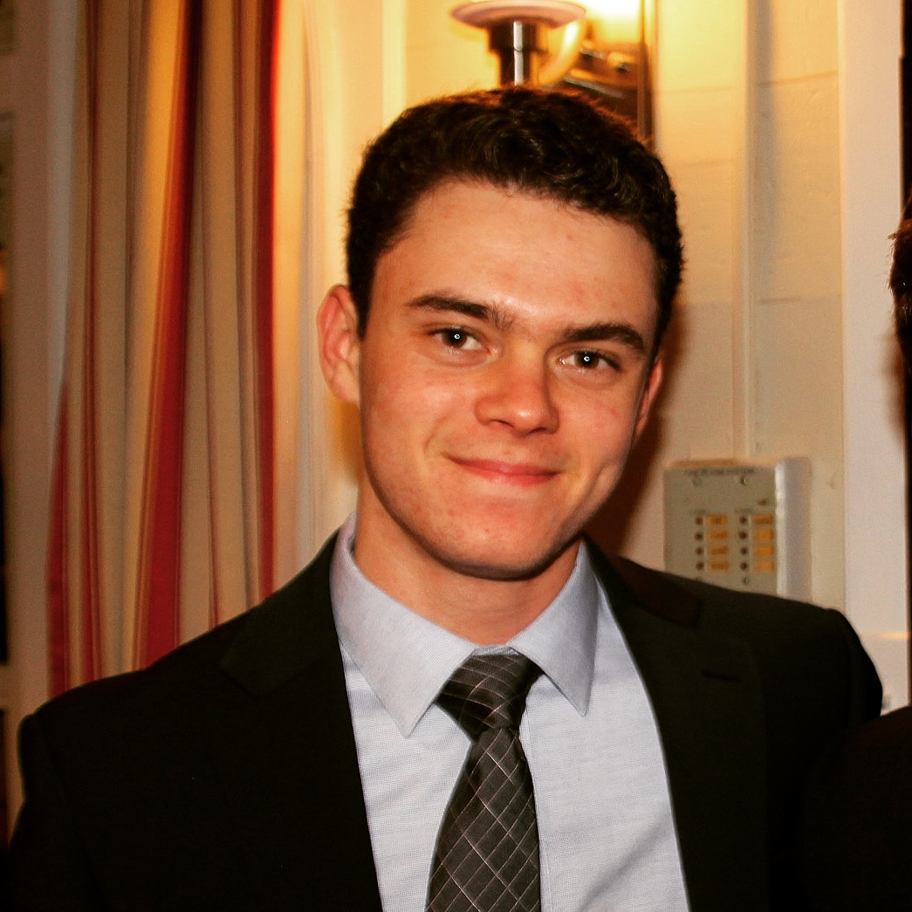

About Me
I am a second-year student at Northwestern University studying computer science. In addition to this I am pursuing a minor in data science and a certificate in managerial analytics from the Kellogg School of Management.
I have experience in various languages including C, C++, C#, and Python, and have worked on cool projects in the past, including developing geographic information systems and numerous machine learning models. During my summer of 2019 I had the opportunity to work for Beghou Consulting in Chicago to help develop software used for firm operations. I have significant coursework in various areas of computer science, with my interests more heavily oriented toward algorithms and machine learning. I look forward to continuing my understanding of the evolving nature of maching learning as computer science becomes so heavily engaged with big data.
At Northwestern, in addition to my coursework, I am actively involved in my fraternity Sigma Phi Epsilon, serving as Vice President of Finance. I also compete on the club tennis team, for which our Nationals trip this spring was thwarted by the pandemic. Finally, I enjoy photography as a hobby as well. Below you can find some of my photos taken over the years. I am originally from San Diego, CA, where I continue to spend much of my time when not on campus.